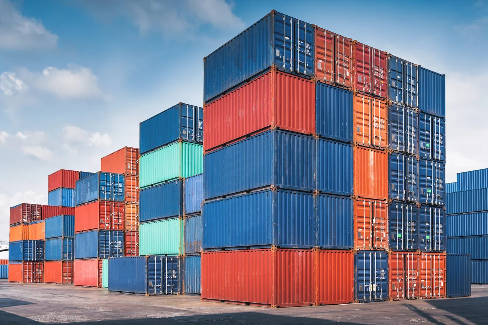

Part 4
Marketing
This section gives the practical launch plan for how the product would be sold in Vietnam.
Part 4 Recommendation
Yes, based on the marketing and logistics plan, I would recommend selling the product in Vietnam on a small scale. The target market, price, promotion, and retail plan all make sense for a premium imported snack product. The plan is practical because it focuses on urban shoppers, premium supermarkets, and simple promotion methods like Facebook ads and in-store sampling. The pricing also fits the idea of selling to buyers who already purchase imported foods instead of trying to compete with cheap local sauces. The main condition is that Farm Boy must use a strong cold-chain distributor and sell through the right premium stores. If the distribution system fails, the rest of the plan would be much weaker.

Target market
Urban, middle or upper income shoppers in Hanoi and Ho Chi Minh City.
Price
239,000 VND for 275 g using a competitive premium approach.
Distribution
Refrigerated sea shipping through a Vietnam-based distributor into premium/import grocery stores.
Postcard